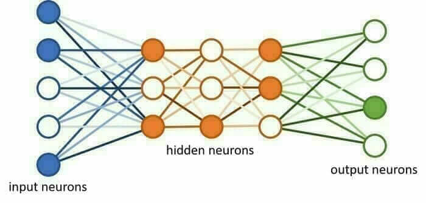
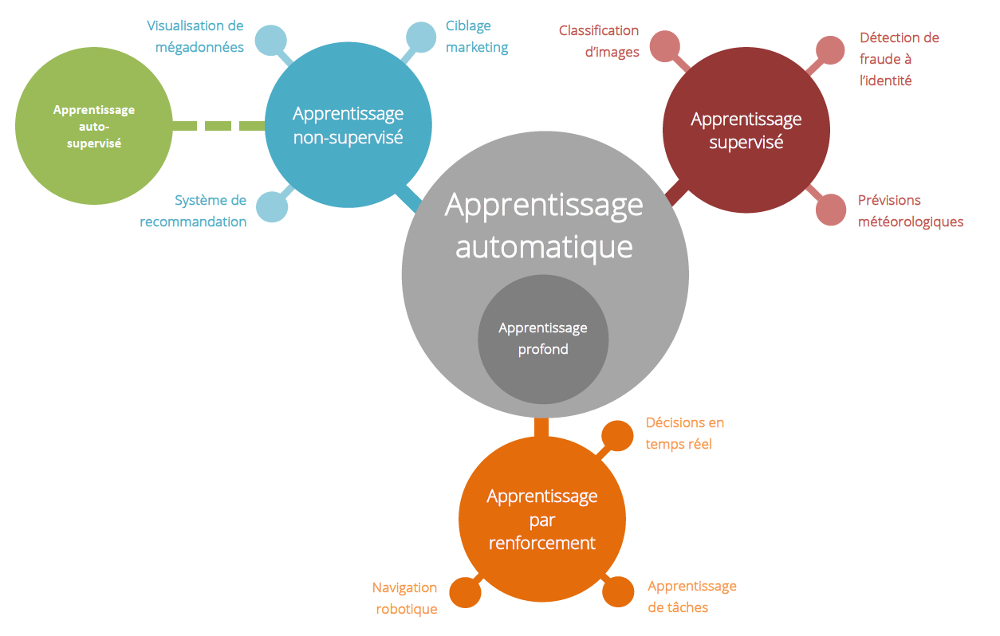
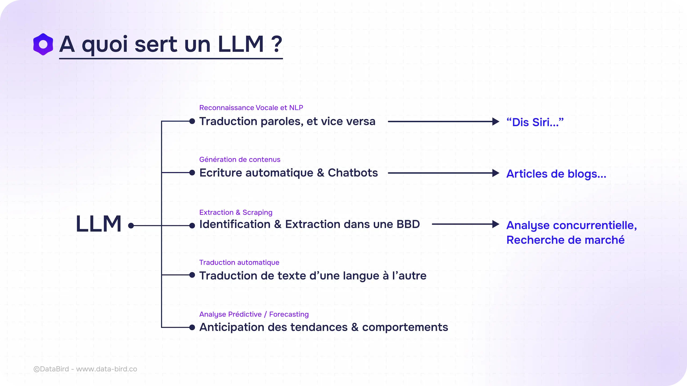

Programmation neuronale
La programmation neuronale une méthode de l'intelligence artificielle (IA)
qui vise à imiter le fonctionnement du cerveau humain en utilisant des réseaux de
neurones artificiels pour résoudre des problèmes complexes. Ces réseaux sont constitués
de "neurones" (unités de traitement) qui sont organisés en couches et interconnectés
pour traiter des données.

Auto apprentissage
L'auto apprentissage, ou apprentissage auto-supervisé, est une approche
en intelligence artificielle (IA) où les modèles apprennent à partir de données
non étiquetées, sans intervention humaine directe pour fournir des annotations
ou des labels. Cette méthode permet aux systèmes d'IA de découvrir des structures
et des relations intrinsèques au sein des données, facilitant ainsi l'apprentissage
de représentations utiles pour diverses tâches.

LLM
Un LLM (Large Language Model), ou Grand Modèle de Langage en français,
est un type d'intelligence artificielle conçu pour comprendre et générer du texte
en langage humain. Ces modèles sont entraînés sur d'énormes quantités de données
textuelles, leur permettant d'apprendre les nuances du langage, les règles grammaticales,
les contextes culturels et même les émotions humaines.

3 meilleurs IA
Afin de déterminer la
meilleure IA il faut prendre en compte ses réponses,
qu'elles soient les plus justes possibles. Si on lui demande une chose précise
et qu'elle nous donne ce qu'on demande et qu'elle est vraie, c'est une bonne IA.
Elle doit aussi, si on lui demande du code, donner un code dans le bon langage
demandé qui fonctionne.
Lequel est le meilleur :
-
Programmation :
-
GitHub Copilot :
Développé en partenariat avec OpenAI, il suggère des extraits
de code en temps réel, s'intégrant parfaitement à des éditeurs tels que
Visual Studio Code et JetBrains.
-
OpenAI Codex :
Puissant modèle de langage d'OpenAI, il comprend et génère du code
dans plusieurs langages de programmation, facilitant la création de
scripts et d'applications.
-
Tabnine :
Il offre des suggestions de code basées sur l'IA, s'intégrant à
divers IDE et prenant en charge plusieurs langages de programmation.
-
Recherche littérale :
-
Scite
C'est un outil d'IA qui offre des citations intelligentes,
permettant de comprendre le contexte des citations dans les documents.
Il aide à identifier rapidement les passages pertinents où des termes
spécifiques sont mentionnés.
-
Julius :
Julius est un assistant de recherche en IA qui facilite l'analyse de la
littérature scientifique. Il permet de discuter avec des articles et
d'analyser des données de recherche en un seul outil, aidant ainsi à identifier
des occurrences spécifiques dans les textes.
-
Jenni :
C'est un assistant d'écriture IA qui suggère du contenu pertinent et offre des
citations automatiques. Il aide à trouver rapidement des informations
spécifiques dans des documents, facilitant ainsi les recherches littérales.
-
Recherche littéraire (auteurs) :
-
ChatGPT :
Développé par OpenAI, c'est un modèle de langage avancé capable de
générer des textes cohérents et pertinents. Il peut être utilisé pour
analyser des œuvres littéraires, générer des résumés ou même créer des
contenus originaux inspirés de styles littéraires spécifiques.
Il a été entraîné sur plein de textes littéraires.
-
SciSpace :
C'est une revue de la littérature sur l'IA qui extrait des
thèmes et des tendances, servant d'assistant IA pour les chercheurs.
-
Research Rabbit :
Il aide à découvrir des articles académiques pertinents
gratuitement, facilitant la recherche littéraire.